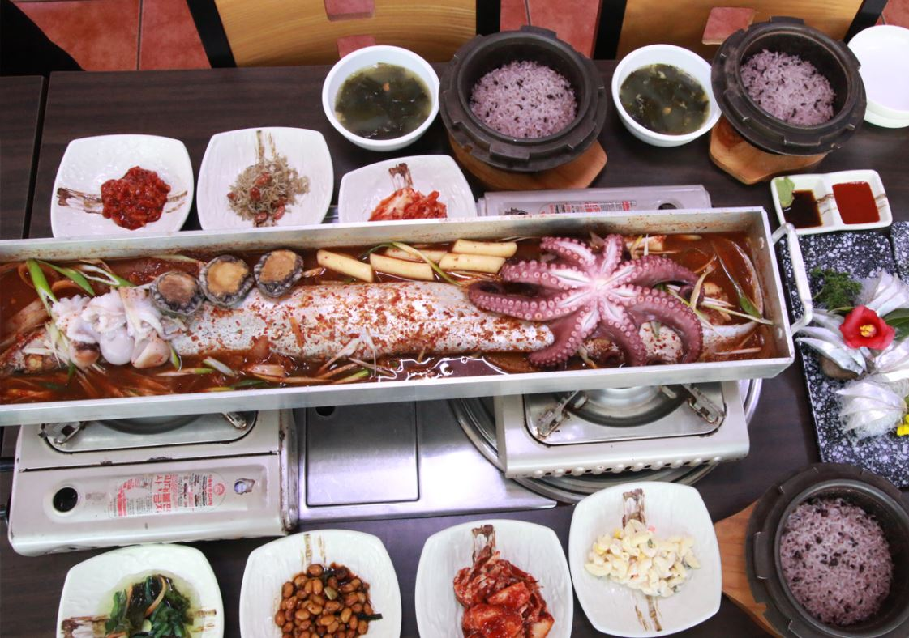
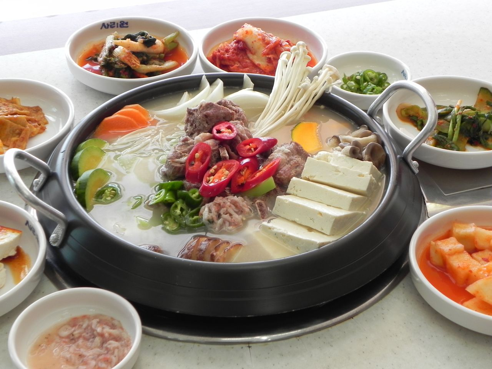
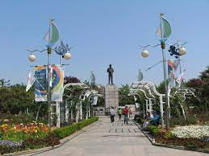
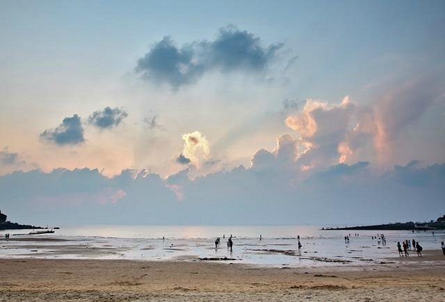
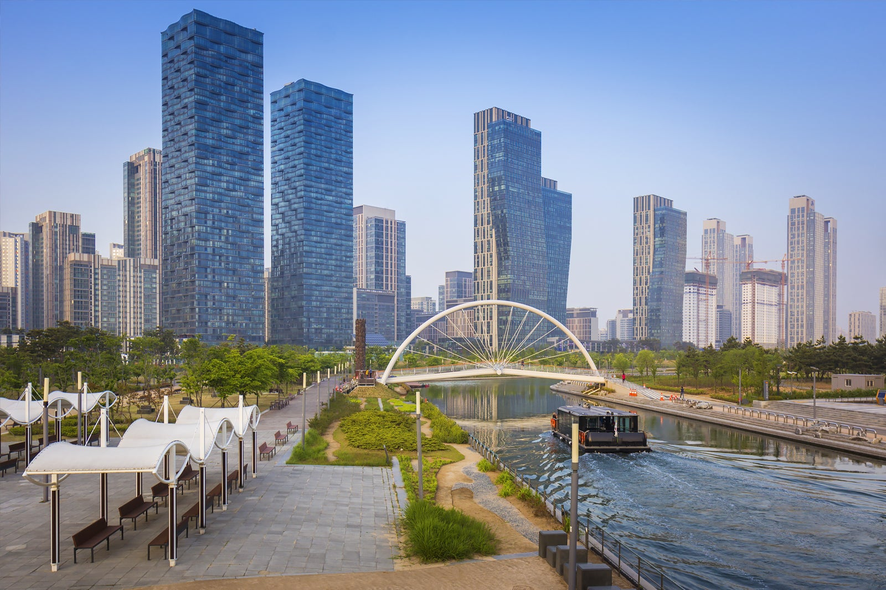
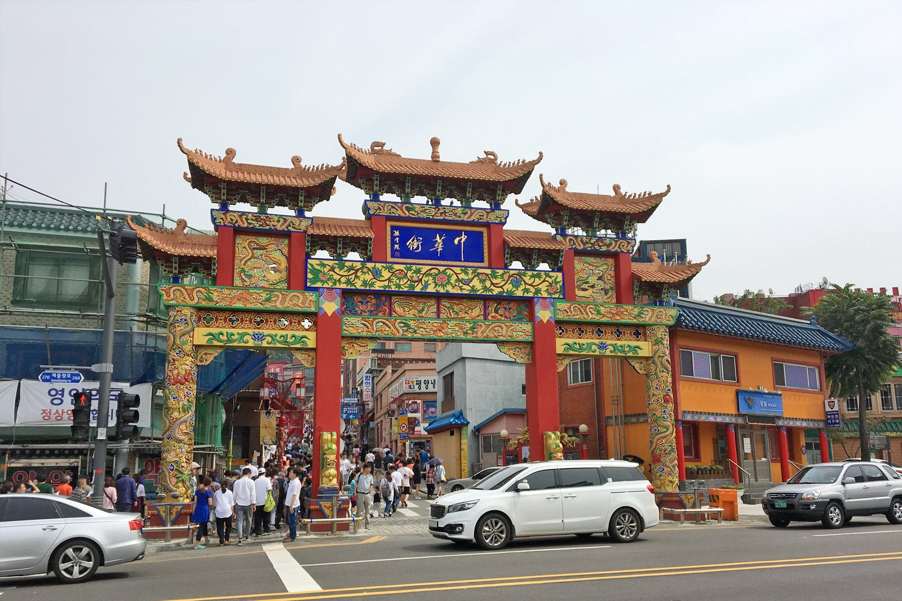

인천은 우리나라에서 세 번째로 큰 도시입니다.
인천은 최대 국제공항인 인천국제공항이 위치해있는 아시아의 허브공항이라 불리는 도시입니다.
Food
차이나타운 짜장면
⭐️⭐️⭐️⭐️⭐️
큼직하게 손질된 재료들을 불맛이 나게 볶아 강렬하고 진한 맛을 자랑하는 ‘공화춘 짜장면’부터 양파와 양배추가 아낌없이 넣고 볶아낸 소스가 일품인 ‘연중반점 삼선짜장’까지!
차이나타운은 인천을 대표하는 관광지 중 하나로 중국의 다양한 문화와 음식을 즐길 수 있는 곳입니다
맛있는 짜장면을 먹었다면 우리나라 짜장면의 역사를 한 눈에 살펴볼 수 있는 '짜장면 박물관'을 들려보는 것은 하나의 팁입니다!
젓국 갈비
⭐️⭐️⭐️⭐️
고려시대 때부터 내려오던 강화도 전통음식!
새우젓과 돼지고기를 넣고 우려낸 육수에 미나리, 양파, 호박 등 갖가지 야채와 두부를 넣고 끓여낸 전골
View
인천 자유공원
⭐️⭐️⭐️⭐️
인천을 대표하는 공원!
숲과 산책로가 잘 조성되어 있고 인천항과 서해를 조망할 수 있어 인천 시민이나 관광객들이 많이 찾는 곳으로 유명합니다.
을왕리해수욕장
⭐️⭐️⭐️⭐️
국민관광지이며 경관이 매우 아름답다. 특히 낙조가 아름답기로 서해안에서 손꼽히는 곳입니다.
제주도에서도 배를타고 가야하니 날씨를 꼭 확인해주세요!
Landmark
송도 센트럴파크
⭐️⭐️⭐️⭐️⭐️
연수구 송도국제도시 중심에 있는 공원으로 이국적 풍경과 아름다운 야경으로 유명한 곳입니다.
고층빌딩, 해수로, 검푸른 하늘, 멀리 하늘을 나는 비행기가 그림 같은 풍경을 연출합니다. 근처의 G타워 33층 무료 전망대에서는 서해, 인천대교, 공원 전경 등을 한눈에 볼 수 있습니다.
차이나 타운
⭐️⭐️⭐️⭐️⭐️
차이나타운은 120년이 넘게 화교 문화와 풍습을 간직하고 있는 곳입니다.
자장면, 짬뽕, 물만두, 월병 등 중국 음식 맛집이 많아 여행객들의 입맛을 즐겁게 해주는 곳 입니다.